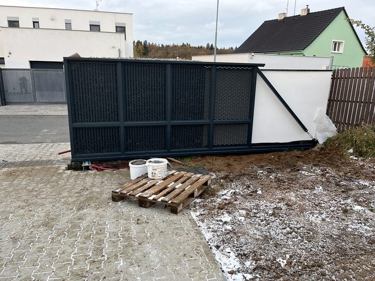

Vrata nejdou otevřít
Zkontrolujeme pohon, ovládání, mechaniku a bezpečný chod.
Kutná Hora a okolí
V Kutné Hoře a okolí pomáháme se servisem garážových vrat, posuvných a křídlových bran, pohonů, závor a úpravami stávajících zařízení. Umíme také dodat vrata na míru včetně motoru, ovládání a montáže.
Přímá odpověď
Ano. Vrata Šnábl zajišťuje servis vrat, bran a pohonů v lokalitě Kutná Hora a okolí. Řeší pohony, ovládání, seřízení, opravy i doporučení dalšího postupu pro rodinné domy, firmy, SVJ a spravované objekty.
Nejrychlejší je poslat lokalitu, typ zařízení, krátký popis situace a fotku celku i detailu pohonu, ovládání nebo poškozené části.
Kutná Hora, Čáslav, Uhlířské Janovice, Zruč nad Sázavou, Sázava a okolní obce.
U zakázek v oblasti Kutné Hory je důležité řešit celý vjezd jako celek: mechaniku vrat nebo brány, pohon, bezpečnostní prvky a ovládání. Díky tomu má zákazník jasné doporučení, ne jen krátkodobou opravu.
Nejrychlejší je zavolat, říct lokalitu, typ zařízení a co přesně nefunguje. Podle situace navrhneme servis, seřízení, opravu pohonu, úpravu stávajícího zařízení nebo nové řešení na míru.
Lokální pokrytí
Dojezd řešíme pro Kutnou Horu, Čáslav, Uhlířské Janovice, Zruč nad Sázavou a okolní obce. Pomáháme s poruchami vrat, bran, pohonů i s doporučením, kdy má smysl oprava a kdy už modernizace.
Nejčastější situace
Lokální stránka pomáhá zákazníkům rychle zjistit, že řešíme konkrétní servisní situace v jejich oblasti.
Zkontrolujeme pohon, ovládání, mechaniku a bezpečný chod.
Prověříme motor, koncové polohy, dorazy a mechanický odpor.
Zkontrolujeme přijímač, ovladače, napájení a nastavení.
Zaměříme prostor a navrhneme vrata nebo bránu na míru.
Reálné ukázky práce
Fotky z realizací ukazují práci v terénu, pohony bran, vrata na míru a servisní zásahy.


Ozvěte se, když potřebujete servis, seřízení, opravu pohonu, montáž, modernizaci nebo nové řešení na míru. Podle stavu zařízení doporučíme technicky rozumný další krok.
Nejvíc pomůže lokalita, typ zařízení, krátký popis situace a fotka celku i detailu pohonu, ovládání nebo poškozené části.
Zavolejte a domluvíme další postup podle lokality, typu zařízení a naléhavosti závady.